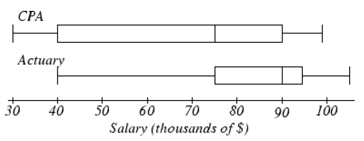

Section 4.5 Summary Statistics: Measures of Variation
Objectives: Section 4.5 Summary Statistics: Measures of Variation
Students will be able to:
Calculate and describe the measures of variation: standard deviation, range and interquartile range (IQR)
Calculate the 5-number summary and construct boxplots by hand and/or using technology (boxplots using technology may be modified or not)
Compare distributions with side-by-side boxplots and percentiles
Calculate and apply Z-scores
Subsection 4.5.1 Measures of Variation
Consider these three sets of quiz scores for a 10-point quiz:
Section A: 5 5 5 5 5 5 5 5 5 5
Section B: 0 0 0 0 0 10 10 10 10 10
Section C: 4 4 4 5 5 5 5 6 6 6
All three data sets have a mean of 5 points and median of 5 points, yet the sets of scores are clearly quite different. In Section A, everyone had the same score; in Section B half the class got no points and the other half got a perfect score. Section C was not as consistent as section A, but not as widely varied as section B.
Thus, in addition to the mean and median, which are measures of center or the “average” value, we also need a measure of how “spread out”" or varied each data set is.
There are several ways to measure the variation of a distribution. In this section we will look at the standard deviation, range and the interquartile range (IQR).
Subsection 4.5.2 Standard Deviation
The sample standard deviation, s, is a measure of variation that tells us how far, on average, the data values deviate, or are different from, the mean. The mean and standard deviation are paired to provide a measure of center and spread for symmetric distributions.
Sample Standard Deviation.
where \(n\) is the sample size, or the number of data values
We will go through the whole process for calculating the standard deviation. Let’s say there is another section of quiz scores:
Section D: 0, 5, 5, 5, 5, 5, 5, 5, 5, 10
The mean quiz score, like Sections A, B and C, is 5 points.
The first step in finding the standard deviation is to find the deviation, or difference, of each data value from the mean. We will do this in a table. You could also use a spreadsheet to do these calculations.
| Data Value | Deviation: (Data Value – Mean) |
|---|---|
| 0 | \(0-5=-5\) |
| 5 | \(5-5=0\) |
| 5 | \(5-5=0\) |
| 5 | \(5-5=0\) |
| 5 | \(5-5=0\) |
| 5 | \(5-5=0\) |
| 5 | \(5-5=0\) |
| 5 | \(5-5=0\) |
| 5 | \(5-5=0\) |
| 10 | \(5-5=0\) |
We would like to get an idea of the “average” deviation from the mean, but if we find the average of the values in the second column, the negative and positive values cancel each other out (this will always happen), so to prevent this we square the deviations.
| Data Value | Deviation: (Data Value – Mean) | Deviation Squared |
|---|---|---|
| 0 | \(0-5=-5\) | \((-5)^{2}=25\) |
| 5 | \(5-5=0\) | \(0^{2}=0\) |
| 5 | \(5-5=0\) | \(0^{2}=0\) |
| 5 | \(5-5=0\) | \(0^{2}=0\) |
| 5 | \(5-5=0\) | \(0^{2}=0\) |
| 5 | \(5-5=0\) | \(0^{2}=0\) |
| 5 | \(5-5=0\) | \(0^{2}=0\) |
| 5 | \(5-5=0\) | \(0^{2}=0\) |
| 5 | \(5-5=0\) | \(0^{2}=0\) |
| 10 | \(10-5=5\) | \(5^{2}=25\) |
Next, we add the squared deviations and we get
Ordinarily, we would then divide by the number of scores, \(n\text{,}\) (in this case, 10) to find the mean of the deviations, but the division by \(n\) is only done if the data set represents a population. When the data set represents a sample (as it almost always does), we divide by \(n–1\) (in this case,).
We assume Section D represents a sample, so we will divide by 9. Note that our units are now points-squared since we squared all of the deviations. It is much more meaningful to use the units we started with, so to convert back to points we take the square root.
The sample standard deviation for Section D is
For comparison, here is the standard deviation for each section listed above:
\(S_{A}=0\) points
\(S_{B}=5.27\) points
\(S_{C}=0.82\) points
\(S_{D}=2.36\) points
For the standard deviation, we usually use two more decimal places than the original data. This tells us that on average, scores were 2.36 points away from the mean of 5 points. In summary, here are the steps to calculate the standard deviation by hand.
Calculating the Sample Standard Deviation.
Find the deviations by subtracting the mean from each data value
Square each deviation
Add the squared deviations
Compute the square root of the sum by dividing by \(n-1\text{:}\)
There are a few important characteristics we want to keep in mind when finding and interpreting the standard deviation.
The standard deviation is never negative. It will be zero if all the data values are equal and get larger as the data spreads out.
The standard deviation has the same units as the original data and it is important to label it.
The standard deviation, like the mean, can be highly influenced by outliers.
Example 4.5.2.
To continue our peanut butter example, we will find the standard deviation of this sample: $3.29, $3.59, $3.79, $3.75, and $3.99.
The first thing we need to find is the sample mean, and we know it is $3.68 from our previous work. Next, we need to find the deviation from the mean for each data value and square it.
| Data Value | Deviation | Deviation Squared |
|---|---|---|
| $3.29 | \(3.59-3.68=-0.09\) | \((-0.39)^{2}=1521\) |
| $3.59 | \(3.59-3.68=-0.09\) | \((-0.09)^{2}=0.0081\) |
| $3.79 | \(3.79-3.68=0.11\) | \((0.11)^{2}=0.0121\) |
| $3.75 | \(3.75-3.68=0.07\) | \((0.07)^{2}=0.0049\) |
| $3.99 | \(3.99-3.68=0.31\) | \((0.31)^{2}=0.0961\) |
The sum of the deviations squared is
The sample standard deviation is
Since the units are dollars, we will round to two decimal places rather than two more than the data. This gives us a standard deviation of $0.26. Together with the mean this tells us that on average, the cost of a jar of peanut butter is $0.26 away from the mean of $3.68.
Calculating the standard deviation by hand can be quite a nuisance when we are dealing with a large data set, so we can also use technology. We use the spreadsheet function =STDEV.S to find the sample standard deviation. Notice that this is different from the population standard deviation, which uses the function =STDEV.P.
Just like the spreadsheet functions =AVERAGE and =MEDIAN, we can either list the individual data values in the formula, or we can enter the data values into a row or column and use the row or column range in the formula.
Example 4.5.3.
The total cost of textbooks for the term was collected from 36 students. Use a spreadsheet to find the mean, median, and standard deviation of the sample.
$140 $160 $160 $165 $180 $220 $235 $240 $250
$260 $280 $285 $285 $285 $290 $300 $300 $305
$310 $310 $315 $315 $320 $320 $330 $340 $345
$350 $355 $360 $360 $380 $395 $420 $460 $460
Since we are finding more than one statistic for this data set, it is much more efficient to enter the data values into a row or column and reference the range in each of the formulas. We enter the data into column A.
For the mean we enter:
=AVERAGE(A1:A36)
and get a result of $299.58.
For the median we enter:
=MEDIAN(A1:A36)
and get a result of $307.50.
For the standard deviation we enter:
=STDEV.S(A1:A36)
and get $78.68.
The mean and the median are relatively close to each other, so we can expect the distribution to be approximately symmetric with maybe a slight skew to the left, since the mean is smaller. The mean and standard deviation together tell us that the average cost of textbooks for a term is about $299.58, give or take $78.68.
In addition to a spreadsheet, we will continue our use of GeoGebra. Let’s take a look at how to use GeoGeogebra to find the mean, median and standard deviation for the last example. We begin just like we did for making a histogram.
Example 4.5.4.
Example 4.5.3 continued: We enter the textbook data into column A of the spreadsheet in GeoGebra. (Main Menu →View →Spreadsheet). Next, select the column title of your data, click on the histogram in the menu bar on the left, and select One Variable Analysis.

Then you will see the histogram. It is always a good idea to check the shape of your distribution before calculating anything. Notice our histogram matches what we found about the distribution from the mean and median. It is approximately symmetric or slightly skewed to the left.

Next, we click the summation symbol \((\sum x)\) in the menu bar on the right. The list of summary statistics will pop up as you can see in the image below. We see that the mean is $299.58, the median is $307.50 and the sample standard deviation is $78.68 – just like we found using the spreadsheet formulas.
The statistics we will use are the sample size \((n)\text{,}\) the mean, median, and the sample standard deviation \((s)\text{.}\) The last five entries in the table – min, Q1, median, Q3, and max – together make up the 5-number summary which we will learn about shortly!

The standard deviation is the measure of variation that we pair with the mean for approximately symmetric distributions. This pairing should make sense because the standard deviation uses the mean in its calculation. But what about the median? What measure of variation do we pair with it?
Subsection 4.5.3 Range
One candidate is the range. The range tells us the spread or width of the entire data set. We calculate the range as the difference between the maximum and minimum value.
Range.
However, the range is not a very good measure of variation since it is very strongly affected by skew and outliers. Consider, for example, the distribution of full time salaries in the United States. Many people earn a minimum wage salary, while others like Jeff Bezos (Amazon) and Bill Gates (Microsoft) earn millions (if not billions!). A range this large does very little to help us get a sense of the spread where most of the data values lie.
Subsection 4.5.4 Quartiles and the Interquartile Range
Instead, the measure of variation that we pair with the median is the interquartile range (IQR). The IQR tells us the width of the middle 50% of data values. By cutting off the lower and upper 25% of data values, we are able to ignore extreme values and provide a more accurate sense of how spread out the distribution is.
The IQR is calculated as the difference between the third quartile (Q3) and the first quartile (Q1). Before we can calculate the interquartile range, though, we need to learn how to find the first and third quartiles.
Interquartile Range (IQR).
As the name implies, quartiles are values that divide the data into quarters. The first quartile (Q1) is the value that 25% of the data lie below. The third quartile (Q3) is the value that 75% of the data lie below. As you might have guessed, the second quartile is the same as the median since 50% of the data values lie below it.
We have seen that the data is split in half by the median so to split it into quarters, we find the median of each half of the data.
Quartiles.
\(Q_{1}\) the median of the lower half of the data
\(Q_{2}\) is the median of the whole data set
\(Q_{3}\) is the median of the upper half of the data
If there is an odd number of data values, we don’t use the median in either half
Example 4.5.5.
(even number of data values): Suppose we have measured the height, in inches, of 12 people who identify as female. The data values are listed below. Find the interquartile range.
59 60 69 64 70 72 66 64 67 66 63 61
Just like when finding the median, we must first order the data.
59 60 61 63 64 64 66 66 67 69 70 72
Then we divide the data into two halves. In the case of an even sample size, we split the distribution down the middle. The first 6 data values are the lower half and the next 6 data values are the upper half. Then we find the median of each. The median of the lower half is Q1 and the median of the upper half is Q3.
In this data \(Q_{1}=62\) inches, and \(Q_{3}=68\) inches. Then we subtract to find the IQR.
This tells us the that the middle 50% of the women’s heights lie within an interval of 6 inches.
Example 4.5.6.
(odd number of data values): Suppose we added one more height (68 inches) to the data set from the previous example. We will again find the interquartile range of the heights.
59 60 61 63 64 64 66 66 67 68 69 70 72
The data are already in order, but we have an odd number of values. To deal with this we do not use the median in the upper or lower halves. The lower half will include the values strictly below the median, and the upper half will include the values strictly above the median.
Then the interquartile range is:
If the data set is small, we can find the first and third quartiles by hand, but we have also seen that they are part of the output from GeoGebra. Here is the output for this data.

From the list of summary statistics we can see that \(=Q_{1}=62\) and \(=Q_{3}=68.5\) inches. Now we can calculate the interquartile range.
This is the same value we found by hand. It is important to note that we are not using spreadsheets for the five-number summary because they do not calculate the quartiles in the same way, so they will not give the same results. Now that we have learned how to find the quartiles we can make a five-number summary and boxplot.
Subsection 4.5.5 The Five-Number Summary and Boxplots
The five-number summary is made up of the minimum, Q1, median, Q3, and the maximum. These five values divide the data into quarters. A boxplot, also called a box-and-whisker plot, is a graphical representation of the five-number summary. Each region of the boxplot contains approximately the same number of data values, so we can see the spread for each region. We can find the five-number summary and draw a boxplot by hand or by using GeoGebra. In our last example the five-number summary from GeoGebra is: 59, 62, 66, 68.5, 72 inches.
Five-Number Summary.
We will use GeoGebra to find the five-number summary for the next example and then explain how to draw a boxplot.
Example 4.5.7.
Let’s continue with the cost of textbook data from Example 4.5.3. Use GeoGebra to find the five-number summary for this sample and draw a boxplot by hand.
$140 $160 $160 $165 $180 $220 $235 $240 $250
$260 $280 $285 $285 $285 $290 $300 $300 $305
$310 $310 $315 $315 $320 $320 $330 $340 $345
$350 $355 $360 $360 $380 $395 $420 $460 $460
As we found before, here is the GeoGebra output. The last five entries of the summary statistics are the five-number summary. Remember to label all of your statistics with units.

The five-number summary is
| Min | \(Q_{1}\) | Median | \(Q_{3}\) | Max |
|---|---|---|---|---|
| $140 | $255 | $307.50 | $347.50 | $460 |
To draw the boxplot, we will first draw a number line that extends a little beyond the minimum and maximum values, and choose a scale. We decided to draw our number line from $120 to $480, in increments of $40. Then we add a meaningful title and units.
Next, make vertical lines at the first quartile, median and third quartile and connect them to form a box. This is the middle 50% of the data and you might notice that the width of the box is the IQR. Then, extend the “whiskers” out to the minimum and maximum values. Note that a boxplot does not have a vertical scale and the height of the box does not matter. Our boxplot looks like this:

GeoGebra will also draw boxplots for us. We enter and select the data values like we have done before and select One Variable Statistics. This brings up the graphics window with a histogram by default. Use the drop-down menu to select the boxplot. We also click on \(\sum x\) to show the summary statistics.
Example 4.5.8.
We will continue with our height data from the 12 people who identify as women. Find the five-number summary and create a boxplot using GeoGebra.
59 60 69 64 70 72 66 64 67 66 63 61
Following the steps above we have the following GeoGebra output. The last five entries in the statistics table are the five-number summary and we have the boxplot on the right.
Here is the five-number summary:
| Min | \(Q_{1}\) | Median | \(Q_{3}\) | Max |
|---|---|---|---|---|
| 59in | 62in | 65in | 68in | 72in |
For this data, the two sides of the box and the two whiskers are approximately the same width. This suggests that the distribution is symmetric. We can verify this by noticing that the mean is approximately equal to the median.
The boxplot can tell us the shape of the distribution, but we cannot tell how many peaks the data has. For that we need a histogram. We can see the histogram and boxplot together by selecting the icon that looks like two rectangles stacked, or an = sign.
Now we have a full picture of this data.
The default boxplot in GeoGebra is called a modified box plot, which shows the data values that are outliers with an X but requires a few more steps to make by hand. To change from the modified box plot to a regular box plot, click on the left pointing arrow in the boxplot window (downloaded version) or the settings wheel (online version) for options, and uncheck “show outliers.” The output window below shows two side-by-side boxplots (the regular boxplot on top and the modified boxplot on the bottom) illustrating the distribution of the annual salaries for 50 randomly selected full-time workers in the Portland Metro area.
From the upper boxplot we can see that this distribution is skewed to the right and the upper quarter of the data is very spread out. It is natural to think of the data values as being evenly spread out in each region, but that is quite often not the case. From the lower boxplot we can see that there are 4 data values that are considered outliers and how far away the last data value is from the others. This is why it is useful to show outliers on a boxplot.
Subsection 4.5.6 Modified Boxplot (Optional)
If you are curious to know how a modified boxplot is made, we will explain it briefly. There is a rule called the 1.5*IQR rule to determine which points are considered outliers. An outlier is a point that is more than 1.5 IQRs away from the middle 50% of the data (the box in the boxplot). We know how to calculate the IQR and then we multiply that by 1.5. We subtract that from Q1 to find the lower fence and add that value to Q3 to find the upper fence. Values beyond the fences are considered outliers and are drawn with an X or a star. Then we draw the whiskers of a modified box plot to the furthest data value inside the fence on each side.
Subsection 4.5.7 Percentiles
Back when we were finding the median, we mentioned that the median is also called the 50th percentile, because 50% of the data values lie below it. We can define any percentile as the data value with that percentage of values below it. Since we have found the quartiles, we can also identify the 25th and 75th percentiles for our data. Q1 is the 25th percentile because 25% of the data values lie below it and Q3 is the 75th percentile because 75% of the data values lie below it.
Percentiles are used when comparing the growth of children to the population and in the results of standardized tests, such as the SAT test. If a person scored in the 83rd percentile, that means they scored higher than 83% of the people who took the test.
Subsection 4.5.8 Comparing Distributions
Box plots and percentiles are particularly useful for comparing data from two populations.
Example 4.5.9.
The box plots of service times for two fast-food restaurants are shown below. Compare the length of time to get served at the two restaurants. Which one should you go to if you are in a hurry?

Store 2 has a slightly shorter median service time (2.1 minutes vs. 2.3 minutes), but the service times are less consistent, with a wider spread of the data.
The 75th percentiles are 2.9 and 5.7 minutes. That means at store 1, 75% of customers were served within 2.9 minutes, while at store 2, 75% of customers were served within 5.7 minutes.
Which store should you go to in a hurry? That depends upon your opinion about luck – 25% of customers at store 2 had to wait between 5.7 and 9.6 minutes.
Example 4.5.10.
The boxplots below show the 5-number summaries of the birth weights, in kilograms, of infants with severe idiopathic respiratory distress syndrome (SIRDS) 50 . The boxplots are separated to show the birth weights of infants who survived and those that did not. What can we conclude from this data?

Comparing the two groups, the boxplot reveals that the birth weights of the infants that died appear to be, overall, smaller than the weights of infants that survived. In fact, we can see that the median birth weight of infants that survived is about the same as the third quartile of the infants that died. Similarly, we can see that the 25th percentile of the survivors is larger than the 50th percentile of those that died, meaning that over 75% of the survivors had a birth weight larger than the median birth weight of those that died.Looking at the maximum value for those that died and the third quartile of the survivors, we can see that over 25% of the survivors had birth weights higher than the heaviest infant that died. The box plots give us a quick, though informal, way to determine that birth weight is quite likely linked to the survival of infants with SIRDS.
Subsection 4.5.9 Z-Scores
Have you ever heard the saying that you can’t compare apples and oranges? It turns out that you can - provided we standardize their measures first!
We will be using the standard score called a Z-score, which is a method commonly used with unimodal and symmetric distributions (called normal or nearly normal distributions). Z-scores may be used with any data, but if the distribution is skewed, then the distribution of Z-scores will also be skewed.
To calculate the Z-score for a data value, we find out how far away from the mean it is by subtracting. Then we divide by the standard deviation to see how many standard deviations that is. Thus, the Z-score of a data value is the number of standard deviations it is away from the mean.
Z-score.
Be sure to calculate the difference first, then divide
If a data value is above the mean, its Z-score will be positive. If a data value is below the mean, its Z-score will be negative. Therefore, if a data value is one standard deviation above the mean, its Z-score is +1. If it is 2.5 standard deviations below the mean, its Z-score is -2.5. Note that the units of Z-scores are standard deviations, not the units of the data values.
We can use Z-scores to determine the relative unusualness of a data value with respect to its own distribution. That is what allows us to compare two unlike items. The convention in statistics is to say that a data value is unusual if it is more than 2 standard deviations from the mean, or in other words, if its Z-score is less than -2 or greater than +2.
Example 4.5.11.
The oranges at a local grocery store have a mean diameter of 5.8 inches and a standard deviation of 1.2 inches. The apples, on the other hand, have a mean diameter of 4.2 inches and a standard deviation of 0.6 inches.
Ali closes their eyes and selects and apple and an orange. When they look at both pieces of fruit, they seem small. If the orange has a diameter of 4.2 inches and the apple has a diameter of 3.5 inches, which is smaller relative to their respective piles of fruit?
To determine which fruit is relatively smaller, Ali can find each of their Z-scores.
By convention, Z-scores are rounded to two decimal places, so we see that the orange is 1.33 standard deviations below its mean and the apple is 1.17 standard deviation below its mean. The orange is therefore smaller relative to its distribution since its Z-score is less than the apple’s Z-score.
We can also see from the Z-scores that neither fruit has an unusually small diameter since each piece of fruit is less than 2 standard deviations from its mean.
We can also find Z-scores using a spreadsheet with this formula:
=STANDARDIZE(data value, mean, standard deviation)
To verify our apple and orange Z-scores, we would write:
Apple:
=STANDARDIZE(4.2, 5.8, 1.2)
and we get -1.33 standard deviations
Orange:
=STANDARDIZE (3.5, 4.2, 0.6)
and we get -1.17 standard deviations

Example 4.5.12.
The mean weight of men over the age of 20 is 195.7 pounds 52 with a standard deviation of 29.8 pounds. The mean weight of domestic cats is 8.6 pounds with a standard deviation of 1.2 pounds. (The standard deviation for men’s weights is estimated. The cat’s mean weight is based on ideal cat weight and the standard deviation is approximate).
At his peak, Andre the Giant, the 7-foot-4-inch French professional wrestler and actor, weighed 520 pounds. When Georgie the cat was at his peak he weighed 24 pounds. Who was more giant – Andre the Giant or Georgie the cat?
Since the weights of cats and men cannot be compared directly, we will need to calculate the Z-scores.
Using the standardize function, we would write:
Andre:
=STANDARDIZE (520, 197.5, 29.8)
which gives us 10.88 standard deviations.
Georgie:
=STANDARDIZE (24, 8.6, 1.2)
which gives us 12.83 standard deviations.
Since both Z-scores are greater than 2 standard deviations, both weights are extremely unusual. However, since the Z-score for Georgie’s weight is larger, he is even more giant than Andre the Giant.
Exercises 4.5.10 Exercises
1.
A group of diners were asked how much they would pay for a meal. Their responses were: $7.50, $25.00, $10.00, $10.00, $7.50, $8.25, $9.00, $5.00, $15.00, $8.00, $7.25, $7.50, $8.00, $7.00. $12.00.
Using your mean from Exercise 4.4.7.1, find the standard deviation of this data. Explain what the mean and standard deviation tell you about how much the group of diners would pay for a meal.
Calculate the five-number summary for this data.
Calculate the range and IQR for this data.
Create a boxplot for the data.
2.
The amount of commercials in an hour of television varies by channel. The total length (in minutes) of all commercials from 8 pm to 9 pm in for some selected broadcast and cable channels on a weekday evening were: 10, 12.75, 7, 9, 9.75, 6.5, 12.5, 12.5, 8.75, 17, 10.5, 2
Using your mean from Exercise 4.4.7.2, find the standard deviation of this data. Explain what the mean and standard deviation tell you about how much the group of diners would pay for a meal.
Calculate the five-number summary for this data.
Calculate the range and IQR for this data.
Create a boxplot for the data.
3.
You recorded the time in seconds it took for 8 participants to solve a puzzle. The times were: 15.2, 18.8, 19.3, 19.7, 20.2, 21.8, 22.1, 29.4.
Using your mean from Exercise 4.4.7.3, find the standard deviation of this data. Explain what the mean and standard deviation tell you about how much the group of diners would pay for a meal.
Calculate the five-number summary for this data.
Calculate the range and IQR for this data.
Create a boxplot for the data.
4.
You weigh 9 Oreo cookies, and you find the weights (in grams) are: 3.49, 3.51, 3.51, 3.51, 3.52, 3.54, 3.55, 3.58, 3.61
Using your mean from Exercise 4.4.7.4, find the standard deviation of this data. Explain what the mean and standard deviation tell you about the weights of these Oreo cookies.
Calculate the five-number summary for this data.
Calculate the range and IQR for this data.
Create a boxplot for the data.
5.
The following table shows the cost of purchasing a car at a local dealership. Some of the cars sold were new and some were used.
Find the standard deviation of this data. Explain what the mean and standard deviation tell you about how much the cars are selling for.
Calculate the five-number summary for this data.
Calculate the range and IQR.
-
Create a boxplot for the data.
Cost
(Thousands of dollars)Frequency 15 3 20 7 25 10 30 15 35 13 40 11 45 9 50 7
6.
As part of a study of email, a researcher counted the length of 34 emails. The lengths of the emails are shown below, rounded to the nearest thousand characters (so a length 0 means that the numbers of characters rounded to 0, not that the message was blank).
Find the standard deviation of this data. Explain what the mean and standard deviation tell you about the length of the emails.
Calculate the five-number summary for this data.
Calculate the range and IQR.
Create a boxplot for the data.
| Length of an email (Thousands of characters) |
Frequency |
|---|---|
| 0 | 4 |
| 1 | 5 |
| 2 | 2 |
| 3 | 3 |
| 4 | 3 |
| 5 | 1 |
| 6 | 3 |
| 7 | 3 |
| 8 | 0 |
| 9 | 3 |
| 10 | 3 |
| 11 | 2 |
| 12 | 0 |
| 13 | 0 |
| 14 | 2 |
7.
Studies are often done by pharmaceutical companies to determine the effectiveness of a treatment. Suppose that a new cancer drug is currently under study. Of interest is the average length of time in months patients live once starting the treatment. Two researchers each follow a different set of 40 cancer patients throughout their treatment. The following data (in months) are collected.
Find the standard deviation of each group.
Calculate the 5-number summary for each group.
Calculate the range and IQR for each group.
-
Create side-by-side boxplots and compare and contrast the two groups.
Researcher 1: 3, 4, 11, 15, 16, 17, 22, 44, 37, 16, 14, 24, 25, 15, 26, 27, 33, 29, 35, 44, 13, 21, 22, 10, 12, 8, 40, 32, 26, 27, 31, 34, 29, 17, 8, 24, 18, 47, 33, 34
Researcher 2: 3, 14, 11, 5, 16, 17, 28, 41, 31, 18, 14, 14, 26, 25, 21, 22, 31, 2, 35, 44, 23, 21, 21, 16, 12, 18, 41, 22, 16, 25, 33, 34, 29, 13, 18, 24, 23, 42, 33, 29
8.
The US Census Bureau, in addition to counting the population of the US every 10 years, conducts yearly informational surveys, such as the American Community Survey (ACS). For the 2012 ACS, a randomly chosen group of 20 respondents (10 males, 10 females) answered a question about their incomes.
Males: $53,000; $70,000; $12,800; 30,000; $4,500; $42,000; $48,000; $60,000; $108,000; $11,000
Females: $1,600; $1,200; $20,000; $25,000; $670; $29,000; $44,000; $30,000; $5,800; $50,000
Find the standard deviation of each group.
Calculate the 5-number summary for each group.
Calculate the range and IQR for each group.
Create side-by-side boxplots, and compare and contrast the two groups.
9.
An experiment compared the ability of three groups of participants to remember briefly-presented chess positions. The data are shown below. The numbers represent the average number of pieces correctly remembered from three chess positions.
Find the standard deviation of each group.
Calculate the 5-number summary for each group.
Calculate the range and IQR for each group.
-
Create side-by-side boxplots and compare and contrast the two groups.
Non-players Beginners Tournament Players 22.1 32.5 40.1 22.3 37.1 45.6 26.2 39.1 51.2 29.6 40.5 56.4 31.7 45.5 58.1 33.5 51.3 71.1 38.9 52.6 74.9 39.7 55.7 75.9 39.7 55.7 75.9 43.2 55.9 80.3 43.2 57.7 85.3
10.
There is evidence that smiling can attenuate judgments of possible wrongdoing. This phenomenon termed the “smile-leniency effect” was the focus of a study by Marianne LaFrance & Marvin Hecht in 1995 54 . The following data are measurements of how lenient the sentences were for three different types of smiles and one neutral control. The same subject was used for all of the conditions so that may affect the results. The second column is a continuation of the first column.
Find the standard deviation for each type of smile and the neutral control.
Calculate the 5-number summary for type of smile and the neutral control.
Calculate the range and IQR for each type of smile and the neutral control.
-
Create side-by-side boxplots and compare and contrast the four groups.
False Smile Felt Smile Miserable Smile Nuetral Control 2.5 7 5.5 2 5.5 3 4 4 6.5 6 4 4 3.5 4.5 5 3 3 3.5 6 6 3.5 4 3.5 4.5 6 3 3.5 2 5 3 3.5 6 4 3.5 4 3 4.5 4.5 5.5 3 5 7 5.5 4.5 5.5 5 4.5 8 3.5 5 2.5 4 6 7.5 5.5 5 6.5 2.5 4.5 3.5 3 5 3 4.5 8 5.5 3.5 6.5 6.5 5.5 8 3.5 8 5 5 4.5 6 4 7.5 4.5 6 5 8 2.5 3 6.5 4 2.5 7 6.5 5.5 4.5 8 7 6.5 2.5 4 3.5 5 6 3 5 4 6 2.5 3.5 3 2 8 9 5 4 4.5 2.5 4 5.5 5.5 8.5 4 4 7.5 3.5 6 2.5 6 4.5 8 2.5 9 3.5 4.5 3 6.5 4.5 5.5 6.5
11.
Make up two data sets with 5 numbers each that have:
The same mean but different standard deviations.
The same standard deviation but different means.
12.
Make up two data sets with 7 numbers that each have:
The same IQR but different medians.
Different IQRs but the same medians.
13.
The side-by-side boxplots show salaries for actuaries and CPAs.
Estimate the 25th, 50th and 75th percentiles for CPA and actuary salaries.
Deshawn makes the median salary for an actuary. Kelsey makes the first quartile salary for a CPA. Who makes more money? How much more?
What percentage of actuaries make more than the median salary of a CPA?
-
What percentage of CPAs earn less than all actuaries?

14.
Fifty juniors and fifty seniors at a local high school were surveyed to find out how many hours per week they spend studying. The side-by-side boxplots the weekly study times for those high school juniors and seniors.

Estimate the 25th, 50th, and 75th percentiles for weekly study time for high school juniors and seniors.
Olivia studies the maximum number of weekly study hours for a junior. Lucy studies the first quartile weekly study time for a senior. Who studies more, and by how many hours?
What percentage of juniors study between the minimum and median weekly study times for seniors?
What percentage of seniors study more than the third quartile weekly study time for juniors?
15.
Suppose you buy a new car whose advertised gas mileage is 25 mpg (miles per gallon). After driving the car for several months, you find that you are getting only 21.4 mpg. You phone the manufacturer and learn that the standard deviation of gas mileage for cars of that model is 1.15 mpg.
Find the Z-score for the gas mileage of your car.
Does it appear that your car is getting unusually low gas mileage? Explain your answer using your Z-score.
16.
According to a local marathon club, the mean finishing time for a marathon is 274 minutes, with a standard deviation of 63 minutes.
If I can run a marathon with a finishing time of 170 minutes, find the Z-score for my marathon time.
Is my marathon finishing time of 170 minutes unusually fast? Explain your answer using the Z-score.
17.
This data is a sample of the average number of hours per year that a driver is delayed by road congestion in 11 cities: 56, 53, 53, 50, 46, 45, 44, 43, 42,40, 36
Find the mean and the standard deviation, including units.
What is the Z-score for the city with an average delay time of 42 hours per year?
18.
In a survey of 12 companies recruiting for recent college graduates, they reported the following numbers of job applicants per job posting: 123, 123, 134, 127, 115, 122, 125, 101, 130, 143, 110, and 122.
Find the mean and standard deviation, including units.
What is the Z score for the company with 143 job applicants per job posting?
19.
You scored an 89 on a math test where the class mean and standard deviation are 75 points and 7 points respectively. You scored a 65 on an English test where the mean and standard deviation are 53 points and 4 points, respectively. In which class did you do better? Explain your answer using Z-scores.
20.
The mean running time for comedy movies is 139 minutes, with a standard deviation of 39.7 minutes. For action movies, the mean running time is 159 minutes, with a standard deviation of 26.2 minutes. A recent comedy movie had a running time of 102 minutes, while an action movie playing at the same theatre had a running time of 129 minutes. Which movie is shorter compared to other movies in the same genre? Explain your answer using Z-score.
21.
Poe, the Clydesdale horse has a world record breaking height of 20.2 hands. All Clydesdale horses have a mean height of 16.5 hands and a standard deviation of 1.85 hands. The last Great Dane to hold the world record for dog height was Gibson who was 107 cm tall. Great Danes have a mean height of 81 cm and a standard deviation of 13 cm. Which animal is taller compared to their respective breed? Explain your answer using Z-scores.
http://openlearn.open.ac.uk/mod/oucontent/view.php?id=398296§ion=1.1.3https://www.cdc.gov/nchs/data/series/sr_03/sr03_039.pdfhttp://www.onlinestatbook.com/https://creativecommons.org/licenses/by-sa/3.0/us/